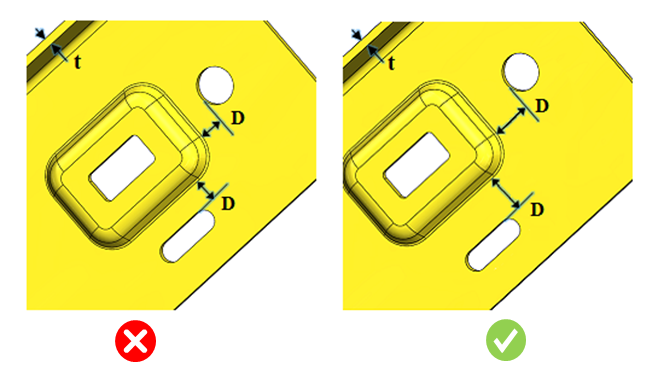

エンボス形状のエッジと切り欠きとの最小距離を板厚で割った比率は、ユーザー指定の値以上である必要があります。
エンボス加工は板金設計における成形プロセスの一部です。設計時には、せん断や変形を防ぐために、エンボスと切り欠きとの最小距離を維持する必要があります。
一般的な指針として、エンボス形状のエッジと切り欠きとの最小距離は、板厚の4倍以上とする必要があります。
DFMProは、エンボス形状のエッジと切り欠きとの最小距離を特定し、エンボスと切り欠き間距離の板厚比を算出します。この比率は、設定された比率と照合して検証されます。
ユーザーは、デフォルトで設定されている比率を編集することができます。

ここでは、
t = 板厚
D = エンボスと切り欠きとの最小距離